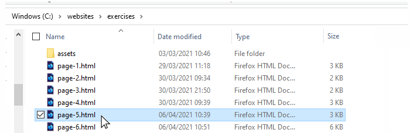
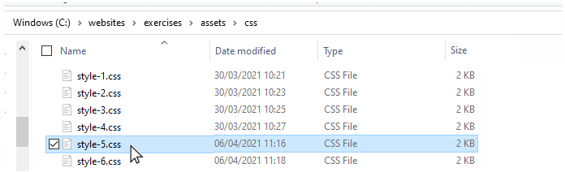
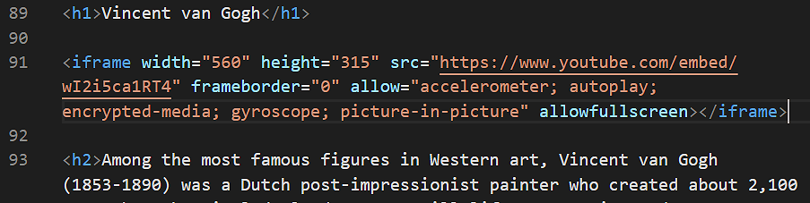

Learning Goals
At the end of this Tutorial, you will be able to:
- Embed in a web page a video from an online streaming platform such as YouTube.
- Add a CSS class to make the video responsive to the screen size of the user’s web browser.
Introduction
In this portfolio project, you will embed a YouTube video in the ‘van Gogh’ web page you previously created in the Working with Images exercise and later updated in the Working with Google Fonts exercise.
You can view how this web page will look at the end of this Tutorial by clicking the link below.

In later Tutorials, you will complete this portfolio project by adding hyperlinks, menus and a footer to it.
Portfolio project folders and files
Your first task is to obtain the files you need for this project.
- If a sub-folder named 📁 portfolio does not already exist inside your ‘main’ 📁 websites folder, create it now.

- In your 📁 portfolio sub-folder, create a new sub-folder with this name: van-gogh
- In this new 📁 portfolio/van-gogh sub-folder, create the usual folder structure for storing the relevant stylesheet and image files. See below.

- Display your 📁 exercises sub-folder, and copy the page-5.html web page. 
- Paste page-5.html into your new 📁 portfolio/van-gogh sub-folder and rename the web page to index.html.
- From your 📁 exercises/assets/css sub-folder, copy the style-5.css stylesheet. 
- Paste style-5.css into your new 📁 portfolio/van-gogh/assets/css sub-folder and rename the stylesheet to style.css.
- Next, copy these four image files from your 📁 exercises/assets/img sub-folder:
bedroom-arles-van-gogh.jpg
cafe-terrace-at-night-van-gogh.jpg
starry-night-van-gogh.jpg
yellow-house-van-gogh.jpg - Paste them into your new 📁 portfolio/van-gogh/asset/img sub-folder.
You now have all the files you need for this portfolio project. Your complete sub-folder and files structure should look as shown below.

Before you begin the project, however, you need to rename the stylesheet link in the web page.
- In VS Code, open the van Gogh index.html file.
- Rename the linked stylesheet from style-5.css to style.css as shown below.

- When finished, save the web page.
Click the link below to view an example of this web page as it should look now.
Embedding the YouTube Video
You are now ready to work with your copied-and-pasted files.
- Start VS Code, and then open the following two files:
index.html (formerly page-5.html)
style.css (formerly style-5.css) - In the HTML file, scroll down to just after the h1 heading and press the Enter key a few times to open up some blank lines.

- Next, click the link below to open a new web browser tab that displays a video on the YouTube website. Vincent van Gogh: The Humble Genius
- Under the video, click the option named SHARE.

- From the choices now displayed, choose Embed.

- From the pop-up box, click the Copy button.
 You can now close the YouTube web browser tab.
You can now close the YouTube web browser tab. - Return to VS Code and the index.html file.
- Paste the copied YouTube embed code into your web page. 
- In your web browser, reload and view your index.html web page.
It may take a few seconds for the embedded video to load, depending on the speed of your Internet connection.

Click the link below to view an example of this web page as it should look now.
Making the video responsive
The problem with embedding YouTube videos directly is that they are positioned in an iframe container. You cannot make an iframe responsive. A fixed width and height need to be set for it.
Follow these steps to make the embedded video scale according to the width of the user’s screen.
- In your index.html file, ‘wrap’ the Youtube video code in a new container as follows:
<div class="video-container"> <iframe src="https://www.youtube.com/embed/wI2i5ca1RT4" frameborder="0" allow="accelerometer; autoplay; encrypted-media; gyroscope; picture-in-picture" allowfullscreen></iframe> </div>
- In VS Code, switch to the van-gogh.css stylesheet.
- At the bottom of the stylesheet, copy-and-paste the following.
.video-container { overflow: hidden; position: relative; width: 100%; margin-bottom: 32px; } .video-container::after { padding-top: 56.25%; display: block; content: ''; } .video-container iframe { position: absolute; top: 0; left: 0; width: 100%; height: 100%; }
Note the padding-top: 56.25% style rule. That is set according to the aspect ratio of the video. In this example, the video’s aspect ratio is 16:9. Hence the figure of 56.25%, which is the result of 9/16. If the embedded video is 4:3, however, you would set the padding value to 75%. - In your web browser, reload and view your index.html web page on desktop/laptop and mobile screens.
Uploading your files to GitHub
After finishing your web page and stylesheet, you are now ready to upload them to your account on GitHub.
- Open a new tab in your web browser and go to GitHub.com. If you are not already signed in to your GitHub account, sign in now.

- On your GitHub home page, click the ‘repo’ that holds your web pages. Its name will look as follows, where username is your chosen username on GitHub.
username.github.io

- On the next GitHub screen displayed, near the right of the screen, you can see a button named Add file. Click on it.

- From the dropdown list displayed, choose the option Upload files.

- In File Explorer (Windows 10) or Finder (Apple Mac), drag-and-drop your entire 📁 portfolio sub-folder to upload it to your repository on GitHub.

- Scroll down to the bottom of the GitHub screen, and accept or edit the short message (Add files via upload) in the Commit changes box.
- Finally, click the green Commit changes button to upload your files.

Your portfolio project web page is now published on GitHub at a web address similar to the following:
https://username.github.io/portfolio/van-gogh/index.html
or simply:
https://username.github.io/portfolio/van-gogh
It may take a few minutes for your uploaded files to appear on GitHub.